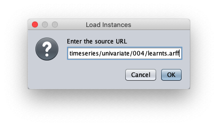
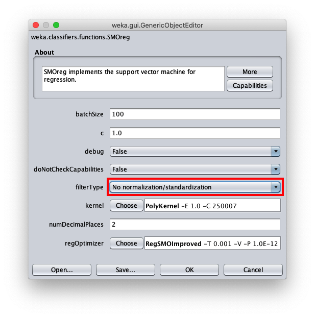
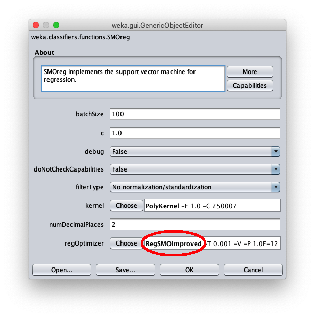

SMO forecast for SVM with polynomial kernel in Weka
This post shows a use in Weka of the SMOreg regressor (Sequential Minimal Optimization) which is an efficient machine learning algorithm for SVM (Support Vector Machine)
to implement the approximators; SMOreg can be used also to implement predictions (forecast) on timeseries; the used kernel is a simple one, namely it is the PolyKernel (Polynomial Kernel)
and the degree of polynomial will be 1.
The objective is to demonstrate that classic machine learning forecast can achieve interesting levels of accuracy with extremely short learning times.
Although LSTM (Long Short Memory Term) type neural networks can be considered the best neural network typologies for the forecasting,
a classic supervised machine learning forecast algorithm, like the one presented here, can reach acceptable levels of accuracy and with a significantly lower computational cost than that of an LSTM neural network.
In the real world datasets pre-exist the learning phase, in fact they are obtained by extracting data from production databases or Excel files,
from the output of measuring instruments, from data-loggers connected to electronic sensors and so on, and then used for the following learning phases;
but since the focus here is the forecast itself and not the prediction of a real phenomenon, the datasets used in this post have been synthetically generated from mathematical functions:
this has the advantage of being able to stress the algorithm and see for which types of datasets the algorithm has acceptable accuracy and for which the algorithm is struggling.
Complete sequence of steps
Launch the Weka program of the University of Waikato (New Zealand);
in this post the version of Weka used is 3.8.3, but what I said also works with previous versions; Weka requires that the Java runtime is installed correctly.
After the Weka program is launched, the following window appears:

When the Weka Explorer window is displayed:


paste the dataset url 004/learntss.arff and press Ok.The loaded synthetic time series is generated with the formula $y=\frac{t}{50} + \sin \frac{t}{10}$ within $t \in I\!N, 0 \leq t < 200$;
the Weka Explorer window (located on the Preprocess tab) looks like this:

To choose the forecast algorithm in question, go to tab Advanced configuration



Namely it is important to set the parameter filterType to No normalization/standadization;
for all other parameters keep the default proposed values; then press OK.


To correct this, open the parameters of the SMOReg algorithm configuration again:

click on the label RegSMOImproved as highlighted in red; the following popup è is shown: